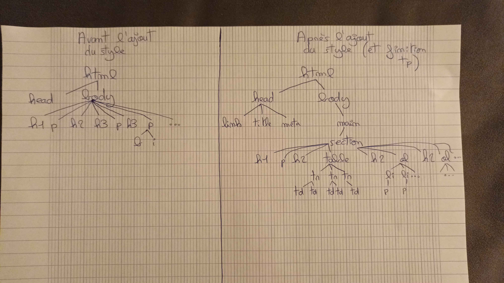
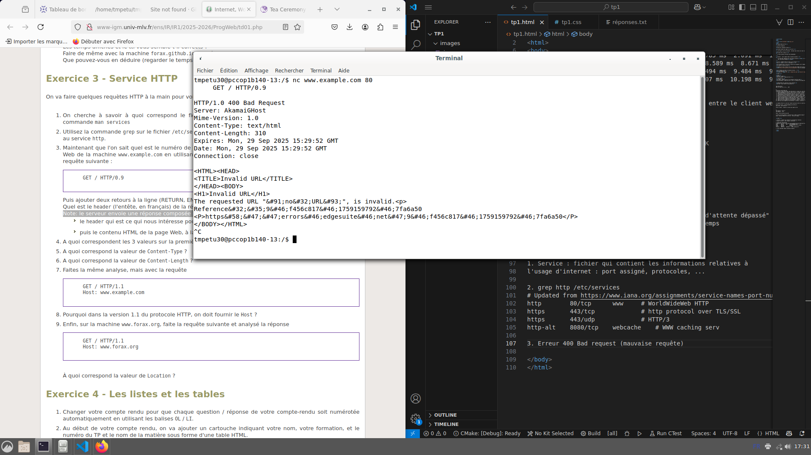
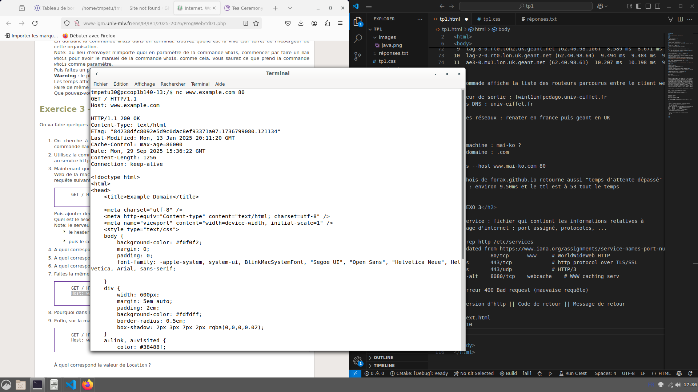

Compte Rendu de TP1
Nicolas Conguisti
Exercice: Document de base
| Nicolas Conguisti | |
| ESIEE Info 1 | |
| TP 1 de Programmation Web | |
Exercice 1
- Recopiez dans votre fichier de compte rendu le squelette de document HTML. Si le résultat ne
s'affiche
pas
correctement (entre autre l'accent de "réponse"), que manque-t-il comme information à la balise head
pour
que le fichier s'affiche correctement ?
Grâce au navigateur, l'affichage est correct malgré le fait qu'on ne précise pas l'encodage. En revanche, si l'accent ne s'affiche pas, alors le code HTML est mal encodé (utiliser <meta charset="UTF-8"> en métadescription).
- A quoi servent les tags h1, h2 et h3 ?
Les tags h1, h2 et h3 servent à afficher des titres (h1 étant le plus important).
- A quoi sert le tag p ?
Le tag p permet d'afficher des paragraphes.
- Ajoutez à votre compte rendu la phrase suivante :
Les tags HTML commencent par une balise ouvrante <foo> et finissent par une balise fermante </foo>.
- Comment mettre en gras ou en italique ?
Voici un mot en gras et un en italique.
- Et comment faire pour mettre un mot à la fois en gras et en italique ?
Voici un mot à la fois et italique : Bonjour !
- On souhaite que le titre de la fenêtre du navigateur soit "Compte Rendu de TP1", comment faire ?
Il faut ajouter une balise title.
- Ajoutez un lien (le tag A) vers le cours avec comme titre cours de programmation web.
- Prenez une feuille de papier puis dessinez l'arbre des différents tags correspondant à votre compte
rendu.
Fait
- Avec votre smartphone (ou celui du voisin), prenez une photo de la feuille de papier sur laquelle
vous
avez dessiné
l'arbre et envoyez-la-vous par mail. Puis allez dans vos mails pour récupérer l'image et la
sauvegarder
sous le nom de mon-arbre-a-moi.jpg.
Utilisez ensuite le tag img pour inclure l'image dans votre compte rendu.

- Créer le fichier tp1.css vide et ajouter un lien de votre compte rendu vers le fichier CSS pour que
vous
puissiez avoir un joli rendu lorsque, à la maison, vous ajouterez quelques sélecteurs CSS pour que
cela
ne
soit pas trop moche.
Fait
Exercice 2
- Ouvrez un navigateur Web et allez à l'URL suivante : http://monge.univ-mlv.fr/ens/
Quel est le nom de la machine à laquelle vous accédez ?
Quel est le nom de domaine auquel vous accédez ?
Nom de la machine : monge
Nom de domaine : monge.univ-mlv.fr - Si l'on exécute host monge.univ-mlv.fr
À quoi correspond la première ligne de la réponse ? À quoi correspond la seconde ligne de la réponse ?1e ligne : monge.univ-mlv.fr has address 193.55.61.150. Cette ligne indique l'adresse IP du serveur monge
2e ligne : monge.univ-mlv.fr mail is handled by 10 monge.univ-mlv.fr. Cette ligne indique quel serveur gère les mails (ici, c'est aussi le serveur monge). 10 est la priorité (plutôt faible ?). - Dans le navigateur Web, dans la barre contenant l'URL, remplacez le nom de la machine par son
adresse IP
pour vérifier que cela fonctionne toujours.
A votre avis, pourquoi utilise-t-on des noms pour les machines plutôt que des adresses IP ?
On fait ça par confort d'utilisation, c'est plus pratique pour les utilisateurs (surtout non-informaticiens).
- On cherche maintenant à faire la même chose avec la machine hébergeant le cours
http://forax.github.io/course/progweb/.
Utiliser la commande host pour récupérer l'adresse IP de la machine correspondant à l'URL.
Que se passe-t-il si on essaye d'accéder à la page du cours dans le browser en remplaçant le nom de
la machine par l'adresse IP trouvée précédemment ?
Expliquer pourquoi.
D'abord, 4 adresses IP sont retournées par la commande host. La 1e est 185.199.109.153. Avec cette adresse, une erreur 404 not found est levée. #TODO NSP POURQUOI
- Exécutez la commande traceroute sur l'adresse IP de la machine forax.github.io.
Qu'affiche cette commande ?
Quel est le nom du routeur de sortie (le premier que vous rencontrez) ?
Comment s'appelle le réseau sur lequel est connectée l'université (le nom de domaine du routeur qui
est
après le routeur de sortie) ?
Quels sont les autres réseaux qui sont traversés ?
Utilisation de traceroute :
> traceroute 185.199.109.153 traceroute to 185.199.109.153 (185.199.109.153), 30 hops max, 60 byte packets 1 fwint1infpedago.univ-eiffel.fr (10.122.0.2) 0.247 ms 0.283 ms 0.353 ms 2 fwext1.univ-eiffel.fr (10.123.255.5) 0.657 ms 0.605 ms 0.655 ms 3 195.220.83.139 (195.220.83.139) 0.996 ms 1.167 ms 1.194 ms 4 vl148-te0-0-0-1-ren-nr-marne-rtr-091.noc.renater.fr (193.51.182.38) 1.538 ms 1.506 ms 1.472 ms 5 be4-ren-nr-creteil-rtr-091.noc.renater.fr (193.51.177.96) 2.655 ms vl630-be4-ren-nr-jussieu-rtr-091.noc.renater.fr (193.51.177.94) 2.402 ms 2.415 ms 6 xe-0-1-23-ren-nr-paris1-rtr-131.noc.renater.fr (193.55.204.98) 1.942 ms xe-1-1-21-ren-nr-paris1-rtr-131.noc.renater.fr (193.55.204.102) 1.772 ms xe-0-1-20-ren-nr-paris1-rtr-131.noc.renater.fr (193.55.204.211) 3.713 ms 7 renater-ias-geant-gw.par.fr.geant.net (83.97.89.9) 3.879 ms 2.005 ms 5.499 ms 8 lag-1-0.rt0.par.fr.geant.net (62.40.98.75) 1.785 ms 2.091 ms 1.766 ms 9 lag-8-0.rt0.lon2.uk.geant.net (62.40.98.106) 8.589 ms 8.671 ms 8.570 ms 10 lag-2-0.rt0.lon.uk.geant.net (62.40.98.64) 9.494 ms 9.484 ms 9.475 ms 11 ae3-0.mx1.lon.uk.geant.net (62.40.98.61) 10.207 ms 10.198 ms 9.266 ms.
La commande affiche la liste des routeurs parcourus entre le client web et le serveur de github.
Routeur de sortie : fwint1infpedago.univ-eiffel.fr.
Réseau de l'université : univ-eiffel.fr.
Autres réseaux traversés : Renater en france (réseau de l'université) puis Geant en UK. - Nous allons nous intéresser au site Web http://www.mai-ko.com/.
Quel est le nom de la machine hébergeant le site Web ?
Quel est le nom de domaine associé à cette machine ?
En utilisant la commande whois dans un terminal, trouvez quelle est la ville (sur terre) de
l'hébergeur
de cette organisation.
Note: au lieu d'envoyer n'importe quoi en paramètre de la commande whois, commencer par faire un man
whois pour avoir le manuel de la commande whois, comme cela, vous saurez ce que prend la commande
whois
comme paramétre.
Puis faites un ping sur la machine www.mai-ko.com.
Nom de la machine : "www"
Nom de domaine : www.mai-ko.com
> whois --host www.mai-ko.com 80
Ville de l'hebergeur : Ne fonctionne pas :/
Le whois de forax.github.io retourne aussi "temps d'attente dépassé".
Ping (fonctionne) : environ 9.50ms et le ttl est à 53 tout le temps.
Exercice 3
- On cherche à savoir à quoi correspond le fichier /etc/services. Pour cela, dans le terminal, tapez
la
commande man services
C'est un fichier qui contient les informations relatives à l'usage d'internet : port assigné, protocoles, ...
- Utilisez la commande grep sur le fichier /etc/services pour déterminer le numéro du port TCP
correspondant au service http.
> grep http /etc/services
# Updated from https://www.iana.org/assignments/service-names-port-numbers/service-names-port-numbers.xhtml.
http 80/tcp www # WorldWideWeb HTTP
https 443/tcp # http protocol over TLS/SSL
https 443/udp # HTTP/3
http-alt 8080/tcp webcache # WWW caching serv
Le numéro de port est le 80. - Maintenant que l'on sait quel est le numéro de port TCP de HTTP, utilisez nc pour vous connecter au
serveur Web de la machine www.example.com
en utilisant le port TCP correspondant au protocole HTTP puis tapez la requête suivante : GET / HTTP/0.9
Puis ajouter deux retours à la ligne (RETURN, ENTER, etc)
Quel est le header (l'entête, en français) de la réponse ?
Erreur 400 Bad request (mauvaise requête) :
 - A quoi correspondent les 3 valeurs sur la première ligne de l'entête ?
Version d'http || Code de retour || Message de retour
- A quoi correspond la valeur de Content-Type ?
text.html
- A quoi correspond la valeur de Content-Length ?
310. C'est la taille du paquet de retour contenant l'erreur
- Faites la même analyse, mais avec la requête GET / HTTP/1.1 || Host:
www.example.com
Code 200 obtenu :
 - Pourquoi dans la version 1.1 du protocole HTTP, on doit fournir le Host ?
On doit spécifier l'host car la machine à laquelle on accède avec nc peut héberger plusieurs sites. On doit donc indiquer le site en plus de la machine.
- Enfin, sur la machine www.forax.org, faite la requête suivante et analysez la réponse :
GET / HTTP/1.1 || Host: www.forax.org
À quoi correspond la valeur de Location ?La localisation est : "http://www-igm.univ-mlv.fr/~forax".
Il retourne un code 302 avec des informations, puis un code html indiquant found mais moved temporarily.
Exercice 4
- Changer votre compte rendu pour que chaque question / réponse de votre compte-rendu soit numérotée
automatiquement en utilisant les balises OL / LI.
Fait
- Au début de votre compte rendu, on va ajouter un cartouche indiquant votre nom, votre formation, et
le
numéro du TP et le nom de la matière sous forme d'une table HTML.
Fait
Pour Mettre la dernière ligne sur 2 colonnes : Il faut utiliser "colspan=2" (vu dans la section 4.9.13 Examples de la page https://html.spec.whatwg.org/multipage/tables.html#the-table-element) - Vérifier que votre compte-rendu passe bien le validateur de HTML W3C.
Fait
Conclusion personnelle
Ce 1er TP a été pour moi un rappel des fondamentaux du langage HTML, rien de vraiment nouveau à ce niveau
là.
En revanche, j'étais beaucoup moins à l'aise sur la partie orientée réseaux (adresse IP et DNS,
commandes
linux). Ce fut utile.
Je réutiliserai mon code pour les autres TP, pour garder la mise en forme.